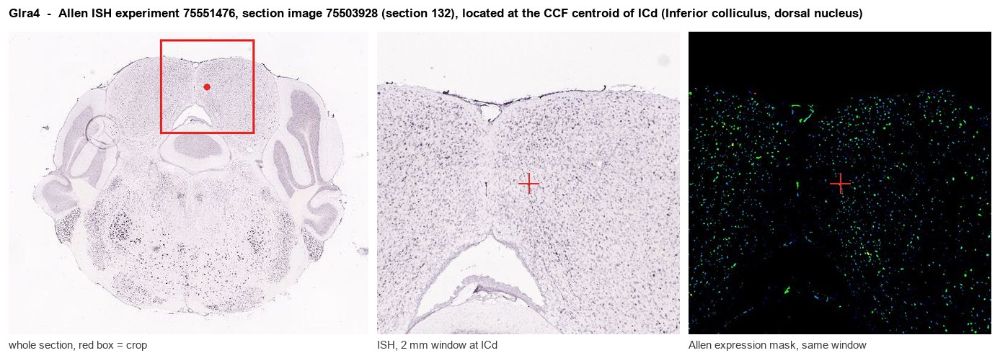

Glra4
Glycine receptor subunit alpha-4
Spatial tier: RESTRICTED · Class: ION_CHANNEL · Top region: ICd (Inferior colliculus, dorsal nucleus) · Positive regions: 22/554
44.7Discovery Score
36.7Targetability Score
CEvidence grade C
What this means: Glra4: fine CCF profile is restricted toward ICd (top regions: ICd, VCO, ICe, ICc, FL; 22 positive regions); direct spatial validation is still required.
Function in ICd: evidence, prediction, innovation
- Gene function
- GLRA4 encodes the alpha-4 subunit of the glycine receptor, a pentameric ligand-gated chloride channel that mediates fast inhibitory transmission and is blocked by strychnine. Mouse Glra4 encodes a functional subunit, whereas the human orthologue has degenerated into a pseudogene, so alpha-4-containing receptors are a rodent-specific inhibitory component. In mouse it has been detected in retina, spinal cord, sympathetic ganglia and early embryonic tissues.
- Region function
- The dorsal cortex of the inferior colliculus is the main descending shell of the auditory midbrain: it receives heavy corticocollicular feedback and shapes frequency tuning, gain control and stimulus-specific adaptation rather than performing first-pass ascending relay.
- Published in this region
- inferred No region-specific literature found. Glycinergic inhibition is a major determinant of inferior colliculus response properties - LeBeau et al. 2001 showed with in vivo iontophoresis that glycine receptors shape frequency response areas - but the subunits identified there are alpha-1 and alpha-3; documented mouse Glra4 expression is in retina (Heinze et al. 2007) and in cell-type-specific subunit surveys of the cochlear nucleus, and Glra4-deficient mice show only subtle behavioural changes (Darwish et al. 2023).
- Predicted function
- Prediction: in the dorsal cortex of the inferior colliculus, alpha-4-containing glycine receptors are predicted to provide a slow, high-affinity tonic chloride conductance distinct from the fast alpha-1 synaptic receptors, acting as a gain-control element that sets the dynamic range of corticocollicular modulation rather than mediating fast point-to-point inhibition. Glra4 deletion is therefore predicted to leave basic frequency tuning intact but to increase spontaneous rates in ICd, broaden intensity-response functions and impair stimulus-specific adaptation and gap detection; strychnine cannot distinguish subunits, so the knockout combined with in vivo recording is the decisive experiment.
- Innovation
- ★★★★★ 5/5 Alpha-4 glycine receptors are essentially unstudied in the auditory midbrain even though glycinergic inhibition dominates inferior colliculus physiology and a viable knockout exists.
- Tools
- Glra4 knockout mice (Darwish et al. 2023; Nishizono et al. 2020); strychnine and the glycine transporter blockers ALX-5407 and ORG25935 for pathway-level manipulation; no alpha-4-selective ligand exists; Slc6a5 (GlyT2)-Cre and Gad2-Cre for inferior colliculus inhibitory neurons; anti-GlyR alpha-4 antibodies with knockout validation required.
- References
Direct evidence located at the region

Allen ISH experiment 75551476, section image 75503928 (section 132): the section that contains the CCF centroid of Inferior colliculus, dorsal nucleus according to the Allen image-to-atlas alignment (reference_to_image), with a 2 mm window around that point. Left: whole section, red box = window. Middle: ISH signal. Right: Allen's expression-mask view of the same window. open this image in the Allen viewer
Look it up yourself: Allen Mouse Brain ISH for Glra4Allen reference atlas: ICd (structure 820)ABC Atlas MERFISH viewer(in the ABC Atlas choose dataset MERFISH-C57BL6J-638850-CCF, colour cells by gene "Glra4" or by parcellation_substructure "ICd")All genes confined to ICd + 3-D brain
Direct spatial evidence
MERFISH REGION LOCATOR

Regional expression figure

Predicted WMB × fine-CCF profile; not direct full-transcriptome spatial measurement.
Spatial profile
Evidence and specificity
- Evidence status
- PREDICTED_FINE
- Direct sources
- None; predicted localization only
- Exclusive threshold
- 12 positive regions out of 554
- Spatial specificity
- 0.312
- Top-region fraction
- 0.058
- Filter status
- PASS
Interpretation limits
- Cell-type-to-region projection is imputed expression, not direct spatial measurement.
- Adult reference atlases do not establish stability across age, sex, strain, state, or disease.
- Transcript abundance does not guarantee protein abundance or genetic-tool performance.